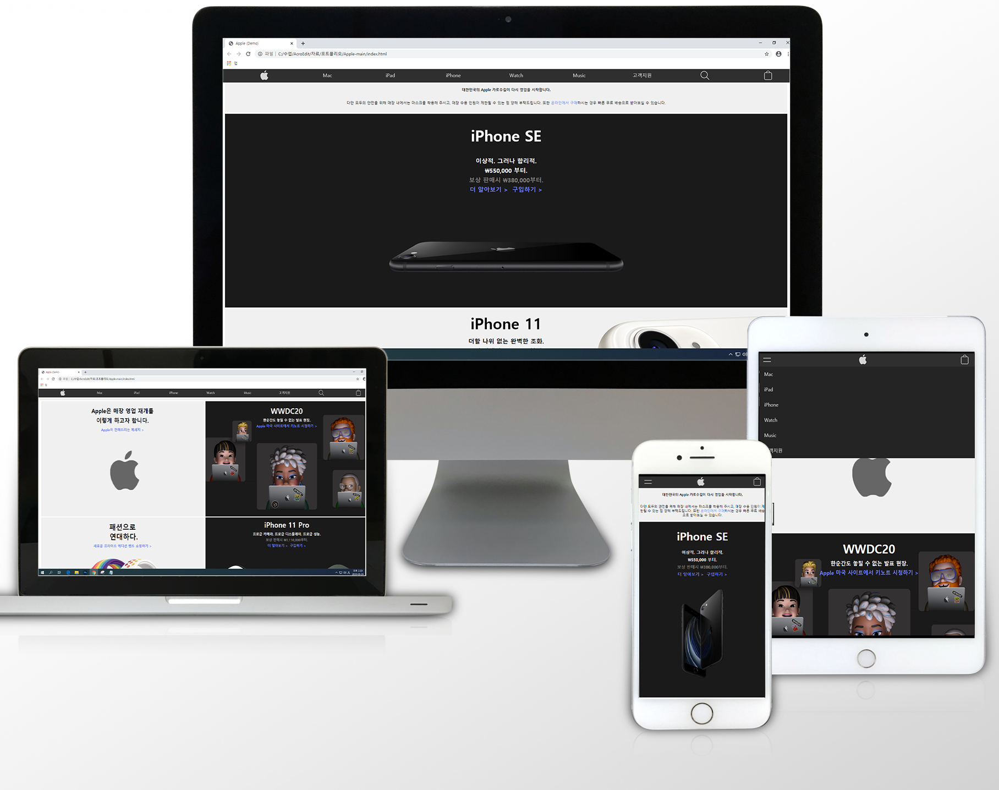
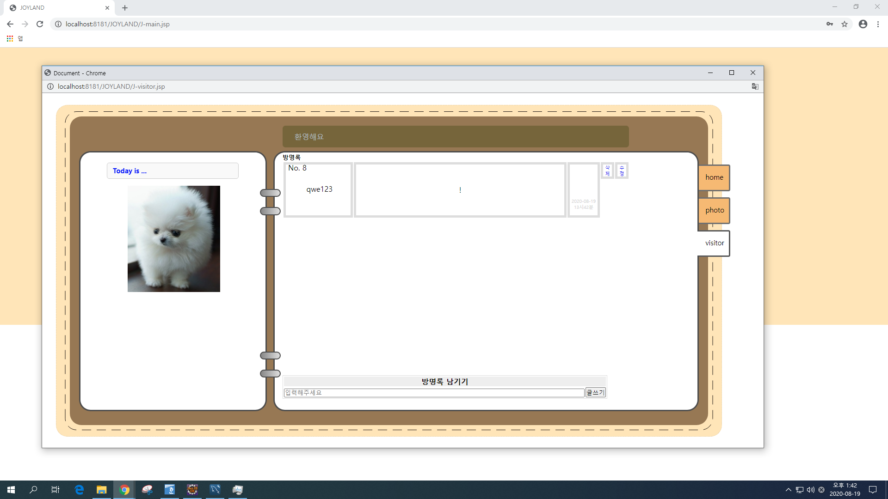

MAIN
INTRODUCE
PORTPOLIO
FOOTER
Hello World..!
환영합니다.
이 사이트는 개인 포트폴리오 사이트 입니다. : )
INTRODUCE
안녕하세요. 저는 웹 퍼블리셔가 목표인 심규호 입니다.
좋은 웹 페이지를 만들기 위해 계속 생각합니다.
아직은 많이 부족하지만 꾸준히 노력해 1인분을 넘어설수 있는
그런 성장을 보여드리고 싶습니다.
보는데 불편함이 없는 디자인을 만들기 위해 노력하겠습니다. : )
학력사항
- 광주인력개발원 드론VR웹개발자 과정
- 조선이공대학교 전기과 졸업
- 전남공업고등학교 전기과 졸업
자격사항
- GTQ 1급
PORTPOLIO

Apple 홈페이지
- 설명 : 반응형 홈페이지를 만들기 위해 시도한 프로젝트
데스크탑 환경과 모바일 환경의 차이점을 확인하고 각 환경에
맞추어 CSS가 다르게 적용 할 수 있도록 @media 쿼리를 사용
각 환경에서 사용자가 최대한 편하게 사용할 수 있는 디자인을
고려하며 만든 프로젝트
- 개발환경 : HTML5, CSS3 활용
- DEMO
JSP 게시판 만들기
- 설명 : JSP 와 DATABASE 연동을 위한 프로젝트
JSP 개발을 위해 Eclipse를 활용하였으며 DATABASE는 MySQL을 활용
연동을 통하여 로그인, 게시판 글쓰기, 댓글 기능들을 구현하였으며
데이터 확인 및 관리 등 데이터라는 개념에 대해 이해도가 늘어났던 프로젝트
- 개발환경 : MySQL, Eclipse활용
- DEMO
